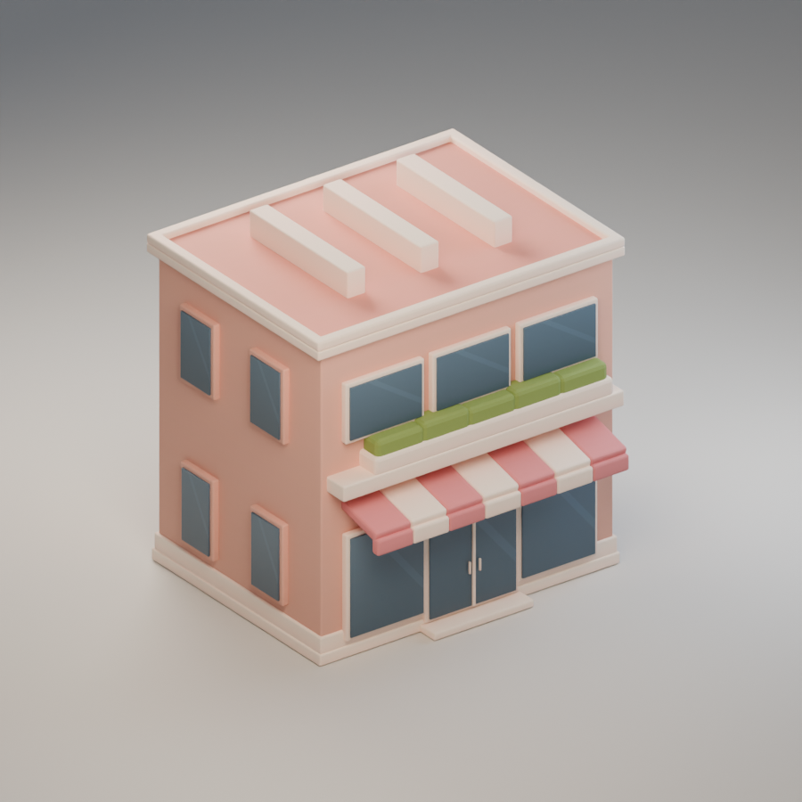
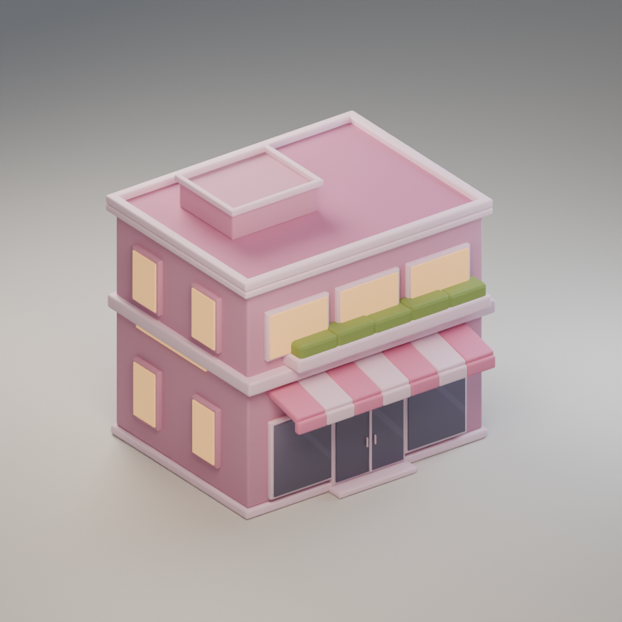
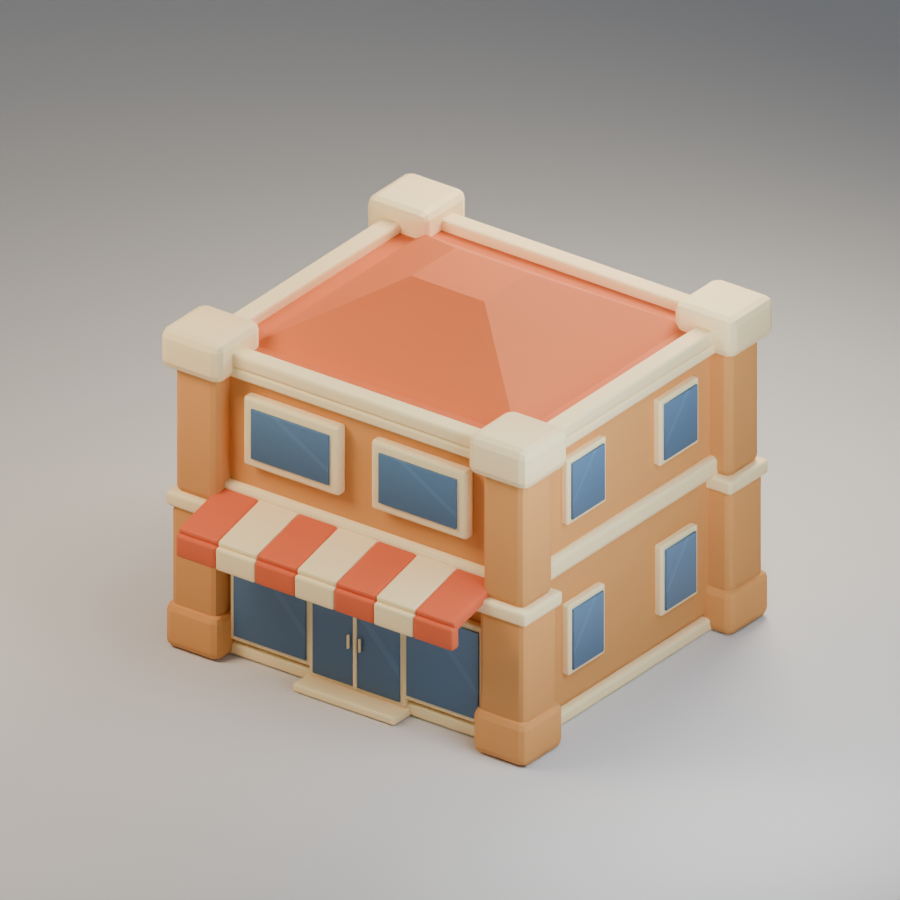
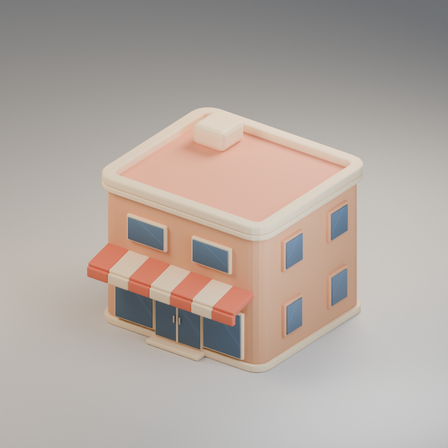
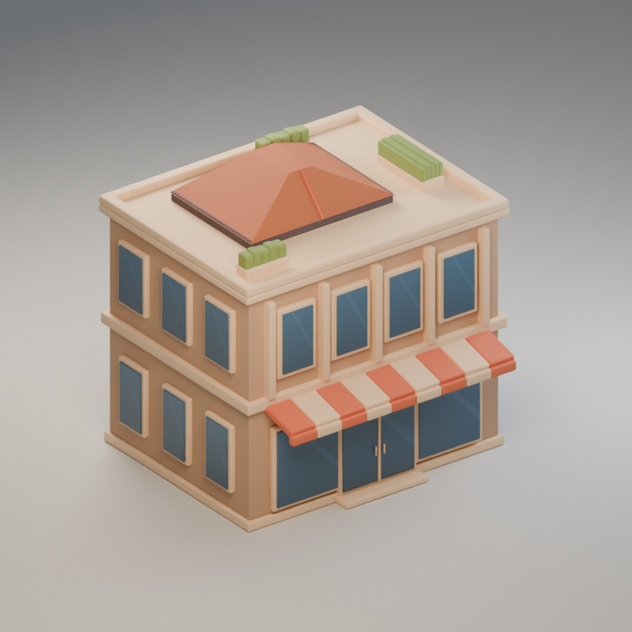
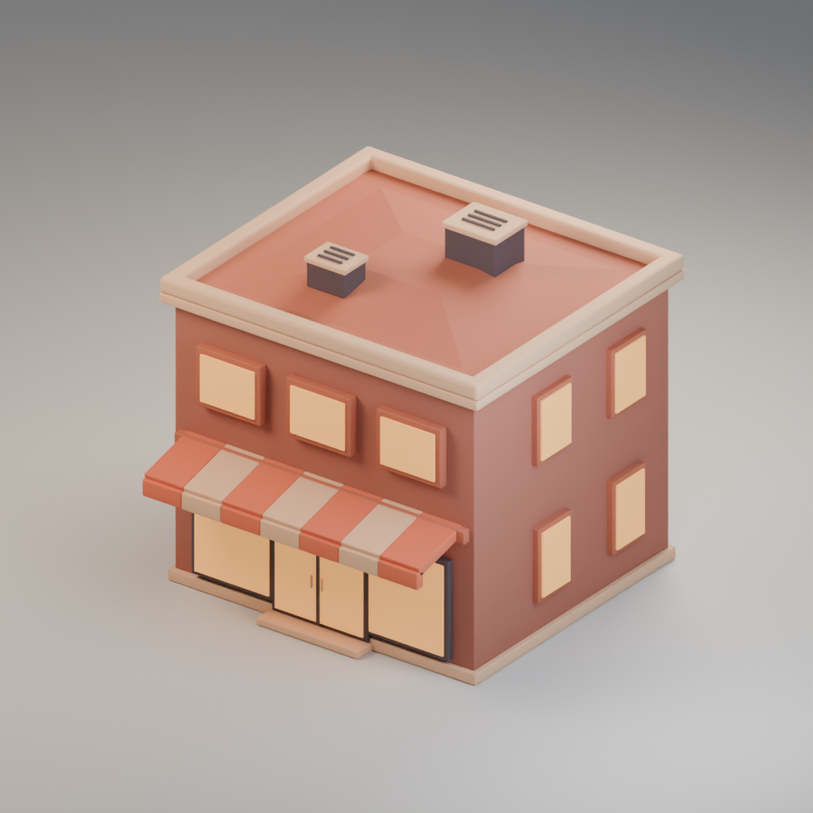

MARKET KIT 01 / SAMPLE IMAGES
Six market styles.
Blender renders of the revised WorldFarm market buildings. Select any image to open it at full size.






MARKET KIT 01 / SAMPLE IMAGES
Blender renders of the revised WorldFarm market buildings. Select any image to open it at full size.





